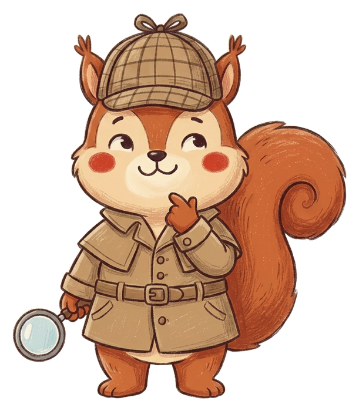

지금 추리 칠판은 문장 한 줄 + 색 빈칸 + 목록 고르기라서 문제집처럼 보이고, 화면 대부분이 빈 칠판이에요. 세 시안 모두 같은 쪽("The lie", 피오나·안내문까지 채우고 쪽지를 고르는 중)을 보여 줘요. 쪽 내용(DEDUCE 네 쪽)과 "모은 단어만 고를 수 있다"는 규칙은 그대로예요.
증거를 내미는 건 심문에서 하니까, 추리 화면은 플레이어가 생각을 정리하는 곳으로. 탐정이 질문을 하나씩 던지고(음성), 플레이어는 노트에서 알게 된 시각·장소·인물로 답한다. 답은 코르크 보드에 메모로 붙고, 알리바이가 확인된 용의자는 X, 남은 한 명에게 실이 모인다. 질문 순서가 곧 생각하는 순서: 언제? → 그때 각자 어디? → 누가 거짓말? → 왜?
첫 질문. 답은 노트에 적은 시각 칩에서 고른다. 고른 시각이 맞으면 보드 맨 위에 "8:40" 카드로 꽂힌다.
레이는 이미 X(카페, 오리 아저씨가 봄). 지금은 로지 차례: "At 8:40, where was Rosie?" 장소 칩으로 답하면 사진 아래 메모가 붙는다.
세 명이 X, 피오나에게 빨간 동그라미와 "거짓말" 메모. 실이 8:40 카드·빵집·도서관에서 피오나로 모이고, 탐정이 결론을 읽어 준다.
사건 목록과 같은 코르크판. 쪽마다 압정 꽂은 카드 한 장, 빈칸에 증거 폴라로이드·얼굴 사진을 꽂는다. 아래 나무 서랍에 모은 사진이 늘어서고, 맞힌 카드끼리 빨간 실로 이어져 마지막 쪽에서 범인 사진에 닿는다.
노트(서류철)를 그대로 펼친 추리 쪽. 빈칸은 받아 적기와 같은 노트 줄 밑줄, 아래 단어 카드를 누르면 앞 빈칸부터 차례로 들어간다(받아 적기와 같은 조작). 쪽 번호는 노트 탭.
탐정이 사무소에서 한 칸씩 물어본다("So what does the note show?" 음성). 아래 사진 세 장 중 하나를 고르면 메모지 문장에 칸이 채워지고 다음 질문으로. 다 차면 탐정이 문장 전체를 읽어 준다.
